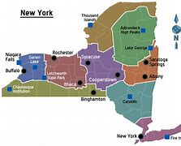
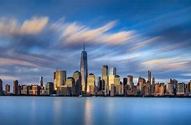
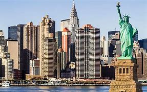
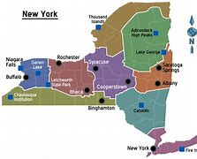
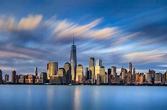
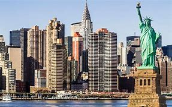

New York City, also known as the City of New York or simply New York, is the most populous city in the United States. With an estimated 2018 population of 8,398,748 distributed over a land area of about 302.6 square miles, New York is also the most densely populated major city in the United States. Located at the southern tip of the U.S. state of New York, the city is the center of the New York metropolitan area, the largest metropolitan area in the world by urban landmass and one of the world's... Population:8.419 million Atraction:Broadway,Times Square,Niagra Falls President:Joe Biden
 




